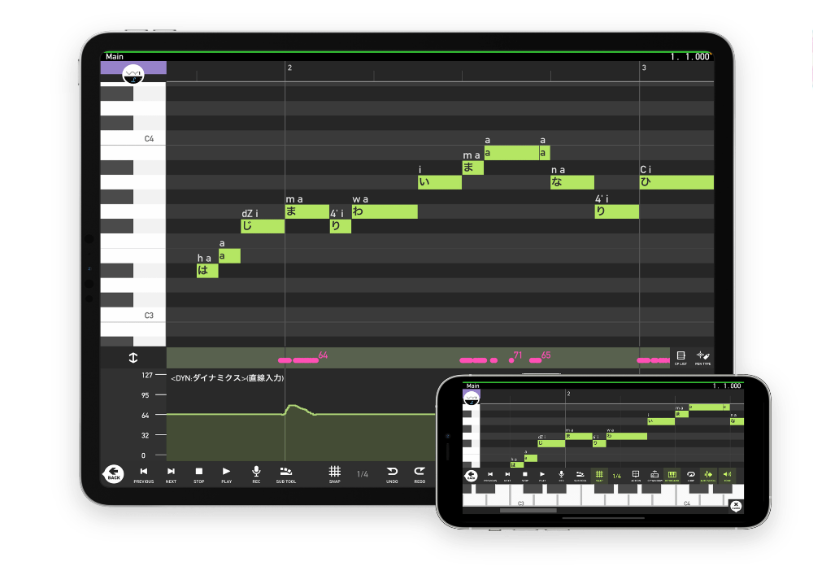

Actualmente, todos los productos de VY1 han sido descontinuados, salvo su última versión. VY1V5 es una voz japonesa, femenina, suave y natural. Incluye un preset style que ermite a la interprete cantar en estilo enka tradicional japonés.
Puedes usar a VY1 en Vocaloid 4.5 Editor for Cubase, Vocaloid 5 y Vocaloid 6
$90.09 Terminos de uso
VOCALOID es una tecnología de síntesis de voz que te permite crear las partes vocales de una canción con solo introducir la letra y la melodía.
Mobile VOCALOID Editor es una app que te permite crear voces de calidad profesional usando VOCALOID en tu iPhone o iPad. La app incluye el banco de voces femenino estándar "VY1_Lite", para que puedas empezar a crear voces de inmediato. Si quieres añadir más bancos de voces, puedes comprarlos y descargarlos al instante desde la app, ampliando así la variedad de voces disponibles. Disfruta creando voces de calidad profesional con VOCALOID en cualquier momento y lugar.
¥6,000 Terminos de uso